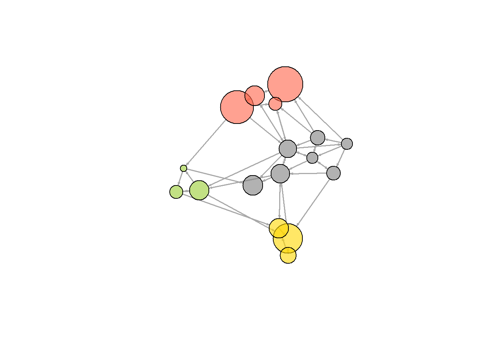

Chapter 9 서브 그룹과 커뮤니티
네트워크 분석에서 하위집단, 커뮤니티 식별은 관심이 가는 흥미로운 주제중 하나다. 하위집단, 커뮤니티 탐지 분석작업을 위해서 먼저 방향성 없는 그래프로 변환해야 하는데 다음과 같은 3가지 방법을 사용할 수 있다.
- 연결된 노드들의 모든 쌍 사이의 무방향 링크를 생성할 수 있다 (
mode = "collapse") - 잠재적으로 멀티플렉스 그래프가 되는 네트워크에서 각각의 방향성있는 링크에 대해 무방향 링크를 생성한다(
mode="each") - 그래프에서 각각의 대칭 링크에 대해 무방향 링크를 생성한다(
mode="mutual").
A -> B 와B -> A 의 연결이 있는 경우에는 각 에지의 속성들에 대해 앞에서 simplify() 함수에서 다룬것 처럼 edge.attr.comb 파라미터를 사용하여 어떻게 처리할 것인지를 설정하면 된다. 여기서는 링크들의 weight를 합하면 되고, 다른 모든 에지들의 속성은 무시하고 제거한다.
net.sym <- as.undirected(net, mode= "collapse",
edge.attr.comb=list(weight="sum", "ignore"))9.1 클릭(Cliques)
클릭(cliques)를 통해 방향성 없는 그래프 전체가 연결된 하위집단을 식별한다.
(무방향 그래프의 완전한 서브 그룹인) 클릭을 찾아보자 : cliques() 함수
cliques(net.sym) # 클릭 목록## [[1]]
## + 1/17 vertex, named, from 96fd32c:
## [1] s03
##
## [[2]]
## + 1/17 vertex, named, from 96fd32c:
## [1] s06
##
## [[3]]
## + 1/17 vertex, named, from 96fd32c:
## [1] s14
##
## [[4]]
## + 1/17 vertex, named, from 96fd32c:
## [1] s09
##
## [[5]]
## + 1/17 vertex, named, from 96fd32c:
## [1] s04
##
## [[6]]
## + 2/17 vertices, named, from 96fd32c:
## [1] s04 s06
##
## [[7]]
## + 2/17 vertices, named, from 96fd32c:
## [1] s03 s04
##
## [[8]]
## + 1/17 vertex, named, from 96fd32c:
## [1] s05
##
## [[9]]
## + 2/17 vertices, named, from 96fd32c:
## [1] s05 s09
##
## [[10]]
## + 2/17 vertices, named, from 96fd32c:
## [1] s03 s05
##
## [[11]]
## + 1/17 vertex, named, from 96fd32c:
## [1] s13
##
## [[12]]
## + 2/17 vertices, named, from 96fd32c:
## [1] s13 s14
##
## [[13]]
## + 1/17 vertex, named, from 96fd32c:
## [1] s10
##
## [[14]]
## + 2/17 vertices, named, from 96fd32c:
## [1] s09 s10
##
## [[15]]
## + 2/17 vertices, named, from 96fd32c:
## [1] s03 s10
##
## [[16]]
## + 1/17 vertex, named, from 96fd32c:
## [1] s16
##
## [[17]]
## + 2/17 vertices, named, from 96fd32c:
## [1] s06 s16
##
## [[18]]
## + 1/17 vertex, named, from 96fd32c:
## [1] s08
##
## [[19]]
## + 2/17 vertices, named, from 96fd32c:
## [1] s08 s09
##
## [[20]]
## + 2/17 vertices, named, from 96fd32c:
## [1] s03 s08
##
## [[21]]
## + 1/17 vertex, named, from 96fd32c:
## [1] s01
##
## [[22]]
## + 2/17 vertices, named, from 96fd32c:
## [1] s01 s05
##
## [[23]]
## + 3/17 vertices, named, from 96fd32c:
## [1] s01 s03 s05
##
## [[24]]
## + 2/17 vertices, named, from 96fd32c:
## [1] s01 s04
##
## [[25]]
## + 3/17 vertices, named, from 96fd32c:
## [1] s01 s03 s04
##
## [[26]]
## + 2/17 vertices, named, from 96fd32c:
## [1] s01 s03
##
## [[27]]
## + 1/17 vertex, named, from 96fd32c:
## [1] s17
##
## [[28]]
## + 2/17 vertices, named, from 96fd32c:
## [1] s16 s17
##
## [[29]]
## + 3/17 vertices, named, from 96fd32c:
## [1] s06 s16 s17
##
## [[30]]
## + 2/17 vertices, named, from 96fd32c:
## [1] s13 s17
##
## [[31]]
## + 2/17 vertices, named, from 96fd32c:
## [1] s04 s17
##
## [[32]]
## + 3/17 vertices, named, from 96fd32c:
## [1] s04 s06 s17
##
## [[33]]
## + 2/17 vertices, named, from 96fd32c:
## [1] s06 s17
##
## [[34]]
## + 1/17 vertex, named, from 96fd32c:
## [1] s12
##
## [[35]]
## + 2/17 vertices, named, from 96fd32c:
## [1] s12 s13
##
## [[36]]
## + 3/17 vertices, named, from 96fd32c:
## [1] s12 s13 s14
##
## [[37]]
## + 2/17 vertices, named, from 96fd32c:
## [1] s04 s12
##
## [[38]]
## + 3/17 vertices, named, from 96fd32c:
## [1] s04 s06 s12
##
## [[39]]
## + 3/17 vertices, named, from 96fd32c:
## [1] s03 s04 s12
##
## [[40]]
## + 2/17 vertices, named, from 96fd32c:
## [1] s12 s14
##
## [[41]]
## + 2/17 vertices, named, from 96fd32c:
## [1] s06 s12
##
## [[42]]
## + 2/17 vertices, named, from 96fd32c:
## [1] s03 s12
##
## [[43]]
## + 1/17 vertex, named, from 96fd32c:
## [1] s11
##
## [[44]]
## + 2/17 vertices, named, from 96fd32c:
## [1] s04 s11
##
## [[45]]
## + 3/17 vertices, named, from 96fd32c:
## [1] s03 s04 s11
##
## [[46]]
## + 2/17 vertices, named, from 96fd32c:
## [1] s11 s14
##
## [[47]]
## + 2/17 vertices, named, from 96fd32c:
## [1] s03 s11
##
## [[48]]
## + 1/17 vertex, named, from 96fd32c:
## [1] s07
##
## [[49]]
## + 2/17 vertices, named, from 96fd32c:
## [1] s07 s08
##
## [[50]]
## + 3/17 vertices, named, from 96fd32c:
## [1] s03 s07 s08
##
## [[51]]
## + 2/17 vertices, named, from 96fd32c:
## [1] s07 s10
##
## [[52]]
## + 3/17 vertices, named, from 96fd32c:
## [1] s03 s07 s10
##
## [[53]]
## + 2/17 vertices, named, from 96fd32c:
## [1] s07 s14
##
## [[54]]
## + 2/17 vertices, named, from 96fd32c:
## [1] s03 s07
##
## [[55]]
## + 1/17 vertex, named, from 96fd32c:
## [1] s15
##
## [[56]]
## + 2/17 vertices, named, from 96fd32c:
## [1] s01 s15
##
## [[57]]
## + 3/17 vertices, named, from 96fd32c:
## [1] s01 s05 s15
##
## [[58]]
## + 3/17 vertices, named, from 96fd32c:
## [1] s01 s04 s15
##
## [[59]]
## + 2/17 vertices, named, from 96fd32c:
## [1] s05 s15
##
## [[60]]
## + 2/17 vertices, named, from 96fd32c:
## [1] s04 s15
##
## [[61]]
## + 3/17 vertices, named, from 96fd32c:
## [1] s04 s06 s15
##
## [[62]]
## + 2/17 vertices, named, from 96fd32c:
## [1] s06 s15
##
## [[63]]
## + 1/17 vertex, named, from 96fd32c:
## [1] s02
##
## [[64]]
## + 2/17 vertices, named, from 96fd32c:
## [1] s01 s02
##
## [[65]]
## + 3/17 vertices, named, from 96fd32c:
## [1] s01 s02 s05
##
## [[66]]
## + 4/17 vertices, named, from 96fd32c:
## [1] s01 s02 s03 s05
##
## [[67]]
## + 3/17 vertices, named, from 96fd32c:
## [1] s01 s02 s03
##
## [[68]]
## + 2/17 vertices, named, from 96fd32c:
## [1] s02 s10
##
## [[69]]
## + 3/17 vertices, named, from 96fd32c:
## [1] s02 s09 s10
##
## [[70]]
## + 3/17 vertices, named, from 96fd32c:
## [1] s02 s03 s10
##
## [[71]]
## + 2/17 vertices, named, from 96fd32c:
## [1] s02 s05
##
## [[72]]
## + 3/17 vertices, named, from 96fd32c:
## [1] s02 s05 s09
##
## [[73]]
## + 3/17 vertices, named, from 96fd32c:
## [1] s02 s03 s05
##
## [[74]]
## + 2/17 vertices, named, from 96fd32c:
## [1] s02 s09
##
## [[75]]
## + 2/17 vertices, named, from 96fd32c:
## [1] s02 s03sapply(cliques(net.sym), length) # 클릭 크기## [1] 1 1 1 1 1 2 2 1 2 2 1 2 1 2 2 1 2 1 2 2 1 2 3 2 3 2 1 2 3 2 2 3 2 1 2 3 2 3
## [39] 3 2 2 2 1 2 3 2 2 1 2 3 2 3 2 2 1 2 3 3 2 2 3 2 1 2 3 4 3 2 3 3 2 3 3 2 2largest_cliques(net.sym) # 최대 수의 노드를 갖는 클릭## [[1]]
## + 4/17 vertices, named, from 96fd32c:
## [1] s03 s01 s02 s05vcol <- rep("grey80", vcount(net.sym))
vcol[unlist(largest_cliques(net.sym))] <- "gold"
plot(as.undirected(net.sym), vertex.label=V(net.sym)$name, vertex.color=vcol)9.2 커뮤니티 발견(Community detection)
다양한 알고리즘이 커뮤니티 탐지를 위해 개발되었다. 커뮤니티 사이는 링크연결이 최소화되고, 커뮤니티 내에는 연결이 조밀하게 많아야 된다.
- Newman-Girvan
- 라벨 전파(Propagating labels)
- Greedy optimization of modularity
- K-core 분해
에지 중개 중심성에 기반한 커뮤니티 발견(Newman-Girvan)
높은 중개 에지 중심성들이 (각 단계마다 다시 계산하여) 순차적으로 제거되고, 가장 좋은 네트워크의 분할이 선택된다 : cluster_edge_betweenness() 함수
ceb <- cluster_edge_betweenness(net) ## Warning in cluster_edge_betweenness(net): At community.c:460 :Membership vector
## will be selected based on the lowest modularity score.## Warning in cluster_edge_betweenness(net): At community.c:467 :Modularity
## calculation with weighted edge betweenness community detection might not make
## sense -- modularity treats edge weights as similarities while edge betwenness
## treats them as distancesdendPlot(ceb, mode="hclust")
plot(ceb, net) 
커뮤니티 탐지 igraph 개체를 검토해 보자 : membership() 함수, modularity() 함수 그리고 crossing() 함수
class(ceb)## [1] "communities"length(ceb) # 커뮤니티 수## [1] 5membership(ceb) # 각 노드의 커뮤니티 소속## s01 s02 s03 s04 s05 s06 s07 s08 s09 s10 s11 s12 s13 s14 s15 s16 s17
## 1 2 3 4 1 4 3 3 5 5 4 4 4 4 1 4 4modularity(ceb) # 그래프 분할의 모듈성## [1] 0.292476crossing(ceb, net) # 부울리안 벡터 : 커뮤니티와 교차하는 에지들은 TRUE## s01|s02 s01|s03 s01|s04 s01|s15 s02|s01 s02|s03 s02|s09 s02|s10 s03|s01 s03|s04
## TRUE TRUE TRUE FALSE TRUE TRUE TRUE TRUE TRUE TRUE
## s03|s05 s03|s08 s03|s10 s03|s11 s03|s12 s04|s03 s04|s06 s04|s11 s04|s12 s04|s17
## TRUE FALSE TRUE TRUE TRUE TRUE FALSE FALSE FALSE FALSE
## s05|s01 s05|s02 s05|s09 s05|s15 s06|s16 s06|s17 s07|s03 s07|s08 s07|s10 s07|s14
## FALSE TRUE TRUE FALSE FALSE FALSE FALSE FALSE TRUE TRUE
## s08|s03 s08|s07 s08|s09 s09|s10 s10|s03 s12|s06 s12|s13 s12|s14 s13|s12 s13|s17
## FALSE FALSE TRUE FALSE TRUE FALSE FALSE FALSE FALSE FALSE
## s14|s11 s14|s13 s15|s01 s15|s04 s15|s06 s16|s06 s16|s17 s17|s04
## FALSE FALSE FALSE TRUE TRUE FALSE FALSE FALSE분할의 높은 모듈성(High modularity)은 커뮤니티 내의 강한 연결성(dense connection)과 커뮤니티 간의 약한 연결성(sparse connection)을 반영한다.
전파 라벨(propagating lables)에 기반한 커뮤니티 탐지
노드에 라벨을 할당하고, 랜덤화한 다음, 이웃 사이에 가장 자주 나타나는 각 정점의 라벨로 대체한다 이 절차들은 각 정점이 이웃들과 가장 공통적인 라벨을 가질 때까지 반복 수행된다.
clp <- cluster_label_prop(net)
plot(clp, net)
모듈성의 탐욕적 최적화(greedy optimization of modularity)에 기반한 커뮤니티 탐지
cfg <- cluster_fast_greedy(as.undirected(net))
plot(cfg, as.undirected(net))
내장된 plot() 함수에 의존하지 않고도 커뮤니티를 시각화할 수 있다.
V(net)$community <- cfg$membership
colrs <- adjustcolor( c("gray50", "tomato", "gold", "yellowgreen"), alpha=.6)
plot(net, vertex.color=colrs[V(net)$community])
K-코어 분할(K-core decomposition)
k-core는 모든 노드들이 최소한 k의 연결중심성을 갖는 최대의 서브그래프이다. 결과는 네트워크 내에 있는 각 정점들의 coreness이다. 만일 한 노드가 D-코어에 속하지만, (D+1) –코어에 속하지 않는다면, 그 노드의 coreness는 D가 된다.
kc <- coreness(net, mode="all")
plot(net, vertex.size=kc*6, vertex.label=kc, vertex.color=colrs[kc])
참고자료
네트워크 커뮤니티 탐지 : https://statkclee.github.io/network/ml-network-communities.html
[withR]소셜네트워크분석 — subgroup(부그룹)](https://medium.com/excitinglab/withr-%EC%86%8C%EC%85%9C%EB%84%A4%ED%8A%B8%EC%9B%8C%ED%81%AC%EB%B6%84%EC%84%9D-subgroup-%EB%B6%80%EA%B7%B8%EB%A3%B9-834bf221b017)
Network Modularity (네트워크의 모듈성) : https://mons1220.tistory.com/93